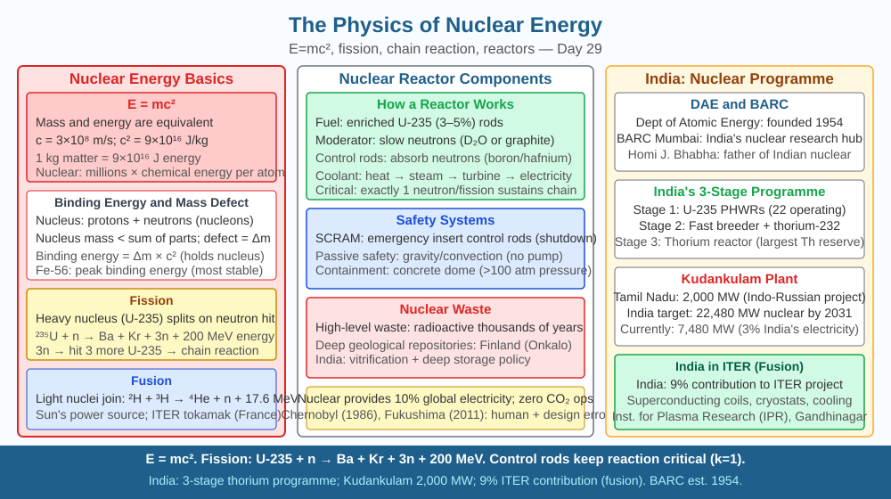

By the end of this lesson, you should be able to explain mass defect and apply E = mc² to calculate nuclear energy, describe the fission chain reaction in a reactor, explain why some heavy nuclei release more energy than others, and connect nuclear physics to India's energy infrastructure.
A lump of uranium-235 the size of a cricket ball contains the same energy as roughly 2 million tonnes of coal — enough to power all of Mumbai for several months. No chemical reaction comes close: burning coal releases about 30 kJ per gram; uranium fission releases about 80,000,000 kJ per gram — nearly three million times more. Where does this energy come from? The answer lies in four tiny letters: E = mc².
Mass defect and Einstein's equation
Every nucleus is made of protons and neutrons (collectively called nucleons) held together by the strong nuclear force. Here is a striking fact: if you measure the mass of a helium-4 nucleus (2 protons + 2 neutrons) and compare it to the sum of the masses of 2 separate protons and 2 separate neutrons, the nucleus is lighter. The missing mass is called the mass defect (Δm).
Where did the mass go? It was converted to energy — the energy that was released when the nucleus was assembled and that must be supplied to pull it apart again. Einstein's equation:
E = mc²
where c = 3 × 10⁸ m/s (speed of light) is the conversion factor. Even a tiny mass converts to enormous energy because c² = 9 × 10¹⁶ m²/s² is such a large number. A mass defect of just 1 atomic mass unit (1.66 × 10⁻²⁷ kg) releases approximately 931 MeV of energy (1 MeV = 1.6 × 10⁻¹³ J).
Binding energy per nucleon is the energy needed to remove one nucleon from the nucleus. Plotting this for all elements produces a peaked curve: iron-56 sits at the maximum (~8.8 MeV per nucleon), meaning iron nuclei are the most stable. Elements lighter than iron can release energy by fusion (combining). Elements heavier than iron can release energy by fission (splitting) — because splitting them produces fragments closer to iron on the curve, with higher binding energy per nucleon, and the mass difference becomes energy.
Nuclear fission — the reactor mechanism
When a slow (thermal) neutron is captured by a uranium-235 nucleus, it becomes an excited U-236 nucleus that immediately splits into two medium-mass fragments plus 2–3 fast neutrons plus energy:
²³⁵U + n → ²³⁶U → ⁹²Kr + ¹⁴¹Ba + 3n + ~200 MeV
(exact fragments vary; this is one common split)
The mass of the products is approximately 0.2 atomic mass units less than the reactants — this mass defect, multiplied by c², yields ~200 MeV per fission event. This is about 50 million times more energy per event than burning a carbon atom in coal (which releases ~4 eV).
Chain reaction and critical mass: Each fission releases 2–3 neutrons. If each of these neutrons triggers another fission, the reaction multiplies exponentially — a chain reaction. Whether this is controlled or explosive depends on the multiplication factor k: - k < 1: sub-critical (reaction dies out) - k = 1: critical (steady, controlled chain reaction — a reactor) - k > 1: super-critical (exponential growth — a bomb)
In a nuclear reactor, control rods (made of boron or cadmium, which absorb neutrons) are inserted or withdrawn to keep k = 1. A moderator (usually water, or graphite in some designs) slows the fast neutrons from fission — slow neutrons are 1000× more effective at triggering U-235 fission than fast ones.
Why not all heavy nuclei are equally fissile: The mass defect — and hence energy released per fission — depends on the specific binding energies of the parent nucleus and its fission fragments. Uranium-235 and plutonium-239 are the primary fissile materials because they readily split with thermal (slow) neutrons. Uranium-238 (which makes up 99.3% of natural uranium) is not fissile with thermal neutrons — it absorbs them without fissioning. This is why nuclear reactors must use enriched uranium (U-235 content raised from 0.7% to 3–5%) and why the energy released depends on which nucleus is split, not just on how heavy it is.
Nuclear fusion — the sun's power source
In the sun's core, hydrogen nuclei (protons) fuse at temperatures of ~15 million K to form helium-4. The mass of the helium-4 nucleus is slightly less than the four protons that combined to make it. This mass defect, via E = mc², releases about 26 MeV per fusion event. Fusion produces no long-lived radioactive waste and uses hydrogen (abundant in seawater) as fuel. The challenge is confining 100-million-degree plasma long enough for net energy gain — ITER in France (with Indian participation through the Institute for Plasma Research, Gandhinagar) is attempting this.
Radioactive decay and hazards: Fission products are typically unstable isotopes (like Sr-90, I-131, Cs-137) that emit alpha, beta, or gamma radiation as they decay toward stability. Gamma radiation is high-energy electromagnetic radiation that penetrates deeply into tissue, causing DNA damage and cancer risk. This is why reactor cores are surrounded by thick concrete and steel shielding, and why spent nuclear fuel remains radioactive for thousands of years.
India's nuclear programme: India has 22 operational nuclear reactors generating about 7,480 MW. Key plants: Tarapur (Maharashtra, India's oldest, 1969), Rawatbhata (Rajasthan), Kudankulam (Tamil Nadu, with Russian VVER reactors, each 1000 MW). India's three-stage programme aims to eventually use thorium (abundant in India's coastal sands) as the primary fuel via breeding in fast breeder reactors.
The nuclear energy chain:
The included SVG shows two diagrams. Left: a binding energy per nucleon curve peaking at iron-56, with arrows showing fusion (light nuclei moving right up the curve) and fission (heavy nuclei splitting left toward iron, down the curve). Right: a schematic of a nuclear reactor — fuel rods, control rods, moderator (water), heat exchanger producing steam, and a turbine-generator pair. Labels show: "U-235 fission releases 200 MeV," "control rods absorb neutrons to maintain k = 1," and "E = mc²: mass defect → energy."

The mass defect in a single U-235 fission event is approximately 0.2 atomic mass units (u), where 1 u = 1.66 × 10⁻²⁷ kg.
Step 1: Calculate the mass defect in kg for one fission event. Step 2: Apply E = mc² to find the energy released in joules. Step 3: Convert to MeV (1 MeV = 1.6 × 10⁻¹³ J) — does your answer approximate 200 MeV? Step 4: Now calculate how many fission events occur per second in a 1000 MW reactor (assume all power comes from fission, and remember that much of the fission energy is converted to heat, then electricity at ~33% efficiency — so fission must produce ~3000 MJ/s of thermal power). Step 5: How many grams of U-235 are consumed per day in this reactor?
Where does the enormous energy released in nuclear reactions come from?
Correct answer: a
Why is understanding nuclear fission and fusion mechanisms more useful than just knowing they produce energy?
Correct answer: a
What would happen to the energy released if a heavier nucleus were split instead of uranium-235?
Correct answer: b
Explain today's concept to a younger student in 60 seconds without technical jargon. Then explain it again using the correct scientific vocabulary.
If both explanations describe the same mechanism, you have understood the concept rather than memorised it.
The sun converts about 4.3 million tonnes of mass into pure energy every second via nuclear fusion — and has been doing so for 4.6 billion years. Despite this seemingly catastrophic rate of mass loss, the sun has lost less than 0.1% of its total mass since it formed. This is because c² is so enormous that the energy equivalent of even a tiny mass is staggering. The same equation that explains the sun's longevity also explains why the radioactive fallout from a nuclear weapon can contaminate an area for decades — the fission products carry their mass-energy as radiation long after the explosion.
Nuclear energy originates from mass defect: the products of fission are slightly lighter than the reactants, and this missing mass converts to energy via E = mc²; the energy released per fission depends on the specific mass defect of each nucleus, which is why U-235 and Pu-239 are fissile while U-238 is not — understanding this mechanism explains reactor design, radiation hazards, and radioactive waste management.